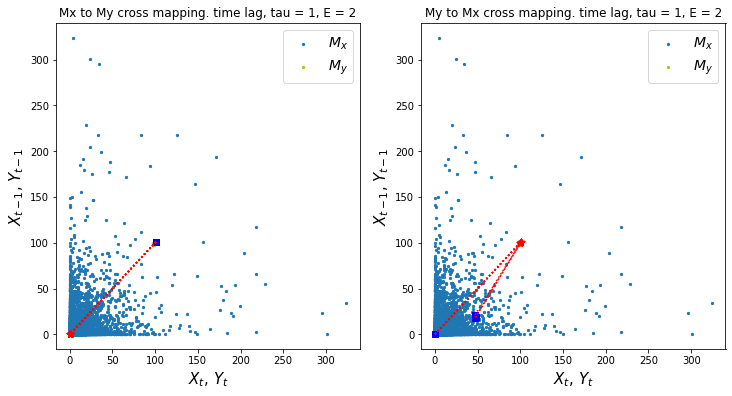

Applying CCM Using causal-ccm package¶
In this section we show how we can use causal-ccm package to infer causality.
Install CCM and Load Packages¶
# !pip install causal-ccm
from causal_ccm.causal_ccm import ccm
import pandas as pd
import numpy as np
import matplotlib.pyplot as plt
### Just to remove warnings to prettify the notebook.
import warnings
warnings.filterwarnings("ignore")
Load Dataset¶
df = pd.read_csv('../data/Ipo_dataset.csv')
df.head()
| Time | Rain | ONI | NIA | Dam | |
|---|---|---|---|---|---|
| 0 | 0 | 0.0 | -0.7 | 38.225693 | 100.70 |
| 1 | 1 | 0.0 | -0.7 | 57.996530 | 100.63 |
| 2 | 2 | 0.0 | -0.7 | 49.119213 | 100.56 |
| 3 | 3 | 0.0 | -0.7 | 47.034720 | 100.55 |
| 4 | 4 | 0.0 | -0.7 | 42.223380 | 100.48 |
# get the variables we want to check causality on
X = df['Rain']
Y = df['Dam']
Run CCM¶
# inputs
tau = 1 # time lag
E = 2 # shadow manifold embedding dimensions
L = len(X) # length of time period to consider
# if we wish to check if X causes Y
ccm1 = ccm(X, Y, tau, E, L)
# visualize sample cross mapping
ccm1.visualize_cross_mapping()

# causality X -> Y
# returns: (correlation ("strength" of causality), p-value(significance))
corr_, p = ccm1.causality()
corr_, p
(0.2775286246309841, 5.4283283439476714e-126)
# visualize correlation of X->Y
# stronger correlation = stronger causal relationship
ccm1.plot_ccm_correls()

# checking convergence
# Looking at "convergence"
L_range = range(5, len(X), 1000) # L values to test
tau = 1
E = 2
Xhat_My, Yhat_Mx = [], [] # correlation list
for L in L_range:
ccm_XY = ccm(X, Y, tau, E, L) # define new ccm object # Testing for X -> Y
ccm_YX = ccm(Y, X, tau, E, L) # define new ccm object # Testing for Y -> X
Xhat_My.append(ccm_XY.causality()[0])
Yhat_Mx.append(ccm_YX.causality()[0])
print('X->Y r', np.round(Xhat_My[-1], 2), 'p value', np.round(ccm_XY.causality()[1], 4))
print('Y->X r', np.round(Yhat_Mx[-1], 2), 'p value', np.round(ccm_YX.causality()[1], 4))
# plot convergence as L->inf. Convergence is necessary to conclude causality
plt.figure(figsize=(5,5))
plt.plot(L_range, Xhat_My, label='$\hat{X}(t)|M_y$')
plt.plot(L_range, Yhat_Mx, label='$\hat{Y}(t)|M_x$')
plt.xlabel('L', size=12)
plt.ylabel('correl', size=12)
plt.legend(prop={'size': 12})
X->Y r 0.31 p value 0.0
Y->X r 0.02 p value 0.0775
<matplotlib.legend.Legend at 0x7fad1e31db50>

Interpretation¶
From the charts above, we find significant convergent cross mapping for the effect of rain \(X\) on dam levels \(Y\). Note that for \(X -> Y\) cases, p-value is 0.0 which means the causality is significant while for \(Y -> X\), p value is > 0.05. We can then say that rain drives dam levels but dam levels do not drive rain.